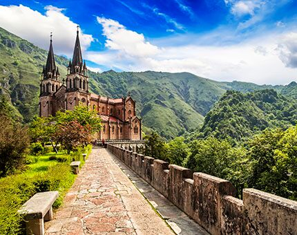
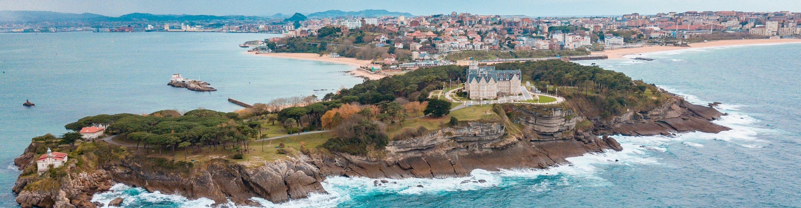

Entre la bruma de los picos y la melodía del mar, el Norte de España despliega su encanto como un tesoro esperando ser descubierto.
El norte de España es una región diversa y cautivadora que abarca desde las áridas costas del Atlántico hasta las majestuosas montañas de los Picos de Europa. Con una rica historia, cultura vibrante y una naturaleza impresionante, esta región ofrece una experiencia única para los viajeros. Desde las ciudades costeras como San Sebastián y Santander hasta los pueblos pintorescos en el interior, el norte de España invita a explorar sus paisajes impresionantes, disfrutar de su deliciosa gastronomía y sumergirse en la calidez de su gente.
Entre la bruma de los picos y la melodía del mar, el Norte de España despliega su encanto como un tesoro esperando ser descubierto.
El norte de España es una región diversa y cautivadora que abarca desde las áridas costas del Atlántico hasta las majestuosas montañas de los Picos de Europa. Con una rica historia, cultura vibrante y una naturaleza impresionante, esta región ofrece una experiencia única para los viajeros. Desde las ciudades costeras como San Sebastián y Santander hasta los pueblos pintorescos en el interior, el norte de España invita a explorar sus paisajes impresionantes, disfrutar de su deliciosa gastronomía y sumergirse en la calidez de su gente.
Explora Asturias: Naturaleza, Tradición y Gastronomía en el Paraíso Verde
Asturias, conocida como "el Paraíso Natural", es una región situada en el norte de España que cautiva a los visitantes con su impresionante belleza natural, su rica historia y su deliciosa gastronomía. Rodeada por el Mar Cantábrico y dominada por imponentes montañas, Asturias ofrece una combinación única de paisajes costeros, verdes valles y majestuosos picos. Entre sus lugares característicos se encuentran:
Mi maravillosa Cantabria

Cantabria, ubicada en la costa norte de España, es una región caracterizada por su belleza natural y su rica historia. Con una combinación única de montañas, valles, playas y acantilados escarpados, Cantabria ofrece paisajes impresionantes que atraen a visitantes de todo el mundo. La capital de Cantabria, Santander, es una ciudad elegante con un hermoso paseo marítimo, playas encantadoras y una animada vida cultural. Además, Cantabria alberga una serie de pueblos encantadores, como Comillas, Santillana del Mar y Potes, que cautivan con su arquitectura histórica y su ambiente pintoresco. Los amantes de la naturaleza encontrarán en Cantabria un paraíso para practicar senderismo, con una gran variedad de rutas que atraviesan bosques frondosos, valles serenos y picos montañosos espectaculares. Además, la región cuenta con cuevas fascinantes, como las Cuevas de Altamira, famosas por sus impresionantes pinturas rupestres, que ofrecen una ventana única al pasado prehistórico de la región. La gastronomía cántabra es otro punto destacado, con platos tradicionales como el cocido montañés, el sorropotún y los exquisitos quesos de la zona, que reflejan la rica herencia culinaria de la región. En resumen, Cantabria es un destino fascinante que combina naturaleza, historia y gastronomía para ofrecer a los visitantes una experiencia inolvidable en el norte de España.